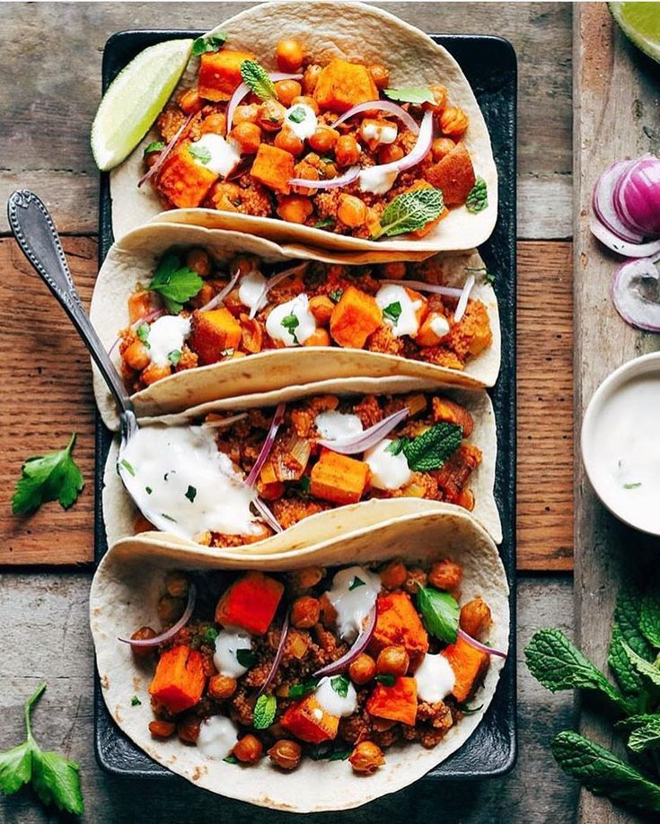

Crispy cumin-roasted chickpeas and caramelized sweet potato cubes loaded into warm artisan corn tortillas, topped with avocado crema, crunchy shredded greens, and fresh lime zest.

Preheat oven to 200°C (400°F). Toss diced sweet potatoes and chickpeas with olive oil, chili powder, ground cumin, and smoked paprika. Roast for 25 minutes until caramelized and crisp.
In a small bowl, whisk together Greek yogurt, fresh lime juice, sea salt, and a splash of water until you get a smooth, creamy drizzle.
Warm small corn or flour tortillas directly over a medium flame or in a dry cast iron skillet for 30 seconds per side until lightly charred.
Fill each warm tortilla with roasted sweet potatoes and chickpeas. Top with sliced avocado, shredded lettuce, diced red onion, lime crema, and fresh cilantro.